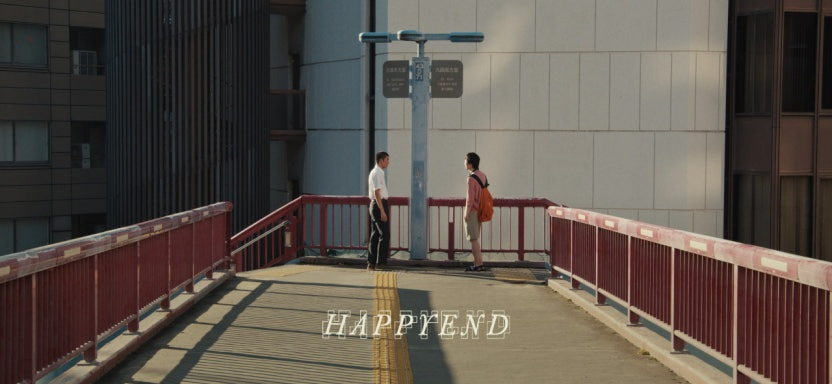

해피엔드, Happyend

2025 | 드라마 | 감독 네오 소라 | 출연 쿠리하라 하야토, 히다카 유키토
★★★★
올들어 가장 좋았다. 모든 게 솔직했다고 해야할까.
옳고 그름보다 앞섰던 우정에 예기치 않은 균열이 생기고, 같다고 믿었던 서로가 사실은 근본적으로 달랐다는 것을 깨닫고, 모두가 각자 다른 방향으로 발끝이 어긋났음에도 고민과 갈등은 개인의 몫으로 남겨두고 씩씩하게 안녕하는 태도. 과거의 나를 떠올리면서, 미래의 아이들을 상상하면서 아주 오랜만에 참 좋았다.
“제가 상상력이 부족해서 제목 짓는 데 항상 고민이 많거든요. 직감적으로 발음과 울림, 형태를 생각했을 때 ‘해피엔드’가 가장 잘 어울린다고 느꼈습니다. 이 영화에서 큰 세계는 이미 디스토피아로 끝나버린 세계지만, 주인공들의 작은 세계에서는 우정과 에너지가 존재하니까요.” -네오 소라 인터뷰 중에서